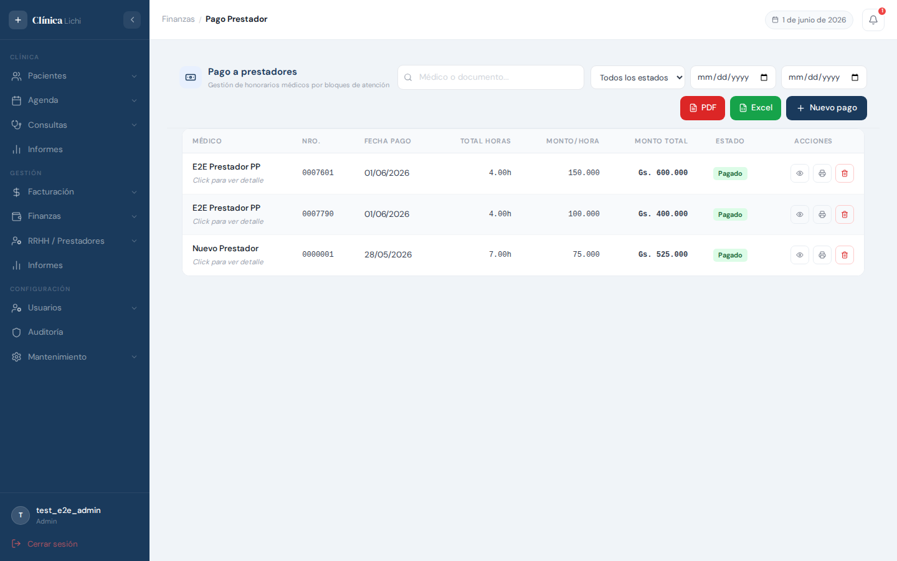
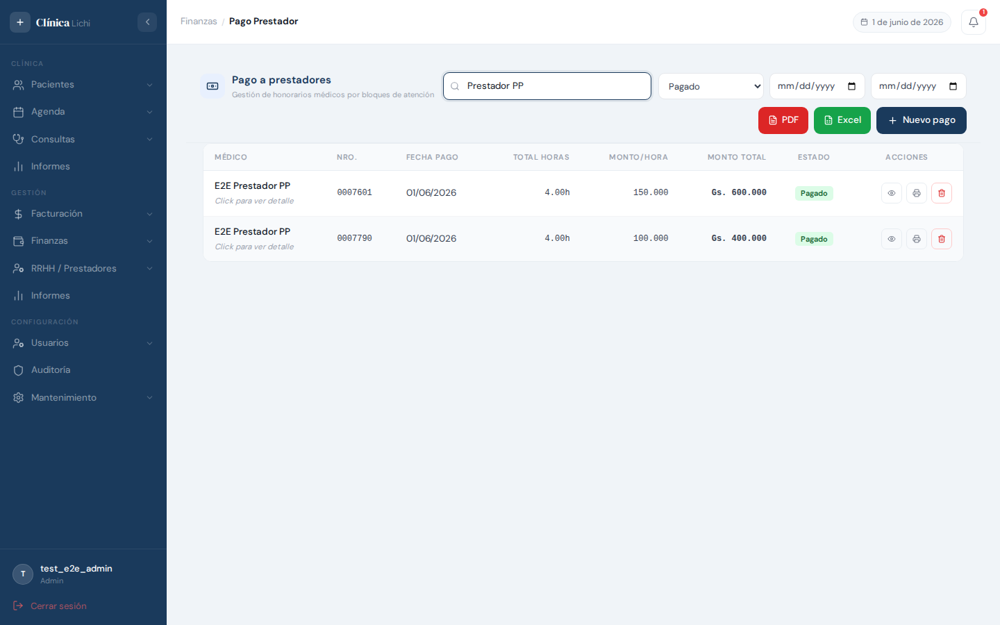
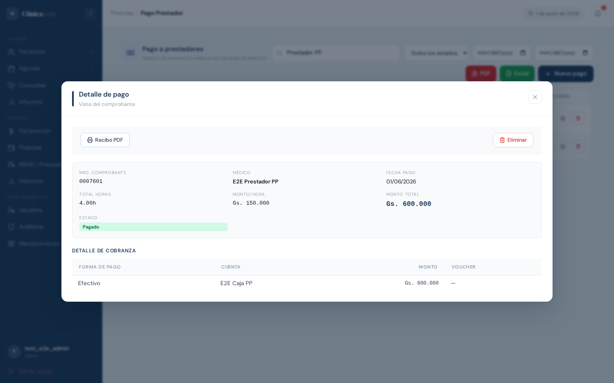
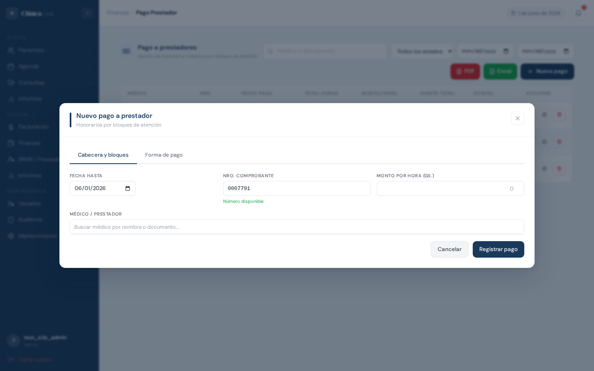
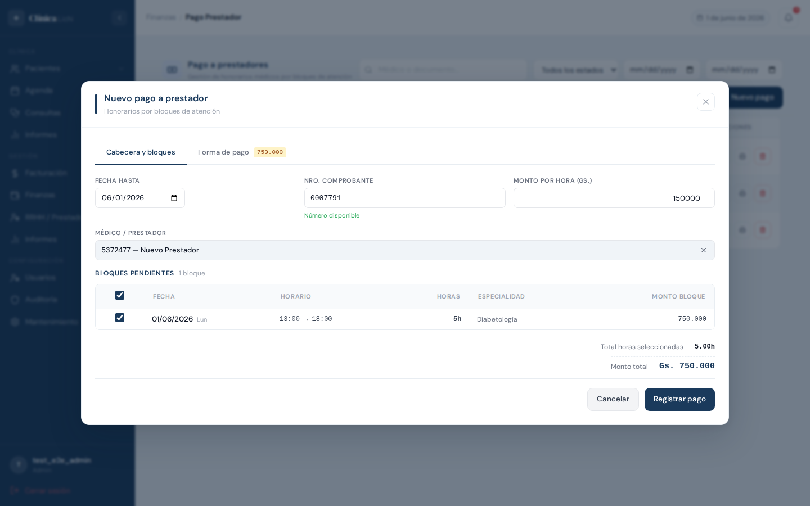
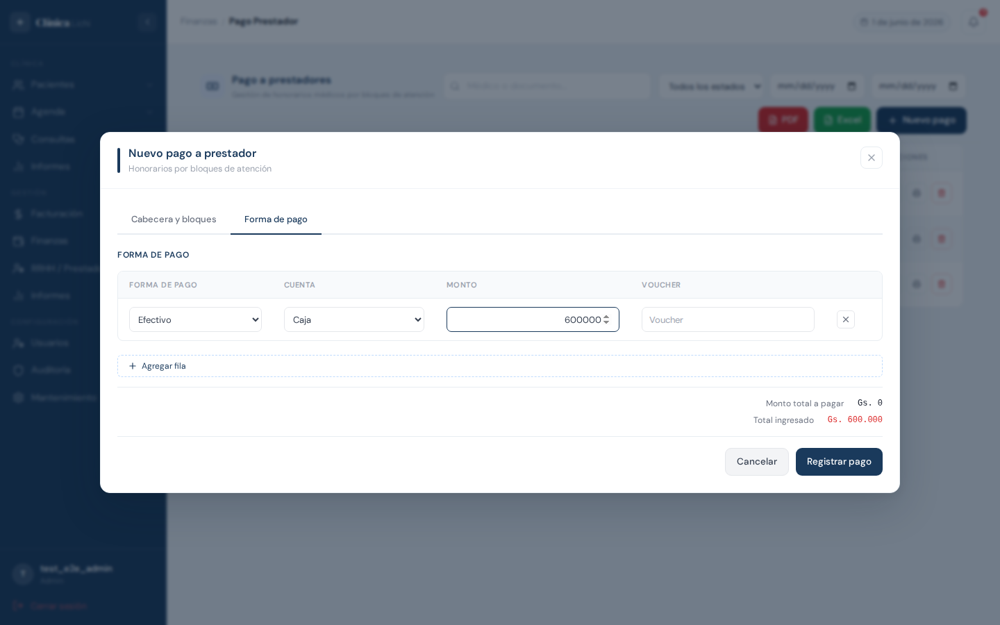
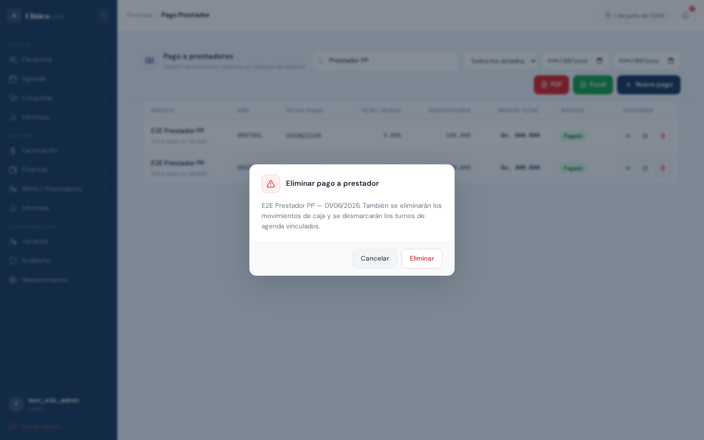
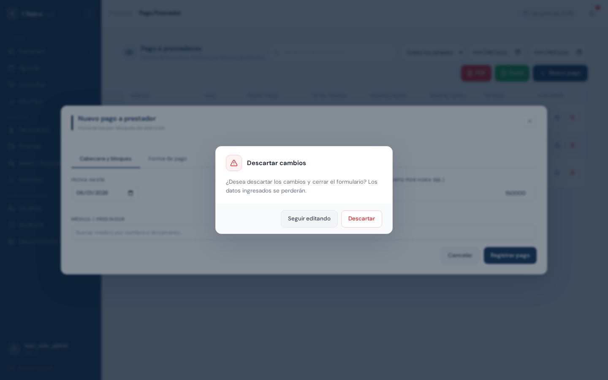

Descripción del módulo
El módulo Pago a Prestadores registra los honorarios abonados a médicos y otros profesionales de la clínica por los turnos de atención que han cubierto. Cada pago agrupa uno o varios bloques — combinación de un horario y una fecha — y calcula automáticamente el monto total multiplicando las horas trabajadas por el valor acordado.
Al registrar un pago el sistema realiza tres operaciones de forma atómica:
- Crea el comprobante de pago con su estado financiero (Pendiente / Parcial / Pagado).
- Marca los turnos de agenda incluidos como pagados, vinculándolos al comprobante.
- Genera los movimientos de egreso en las cuentas de caja/banco utilizadas.
Estados del pago
| Estado | Condición | Saldo |
|---|---|---|
| Pendiente | No se ingresó ningún monto de pago (Gs. 0) | Igual al monto total |
| Parcial | El monto ingresado es mayor a 0 pero menor al total | Diferencia entre total y pagado |
| Pagado | El monto ingresado cubre exactamente el total | Gs. 0 |
Permisos por rol
| Acción | Administrador | Recepcionista | Médico | Secretaria médico |
|---|---|---|---|---|
| Ver listado de pagos | ✅ | ✅ | ✅ | — |
| Ver detalle de un pago | ✅ | ✅ | ✅ | — |
| Registrar nuevo pago | ✅ | — | — | — |
| Eliminar un pago | ✅ | — | — | — |
| Ver bloques pendientes | ✅ | ✅ | ✅ | — |
| Descargar reporte PDF / Excel | ✅ | ✅ | ✅ | — |
| Ver recibo PDF de un pago | ✅ | ✅ | ✅ | — |
Acceder al módulo
El módulo se encuentra en el menú lateral izquierdo, dentro del grupo Finanzas:
- Hacer clic en Finanzas en el menú lateral para expandir el grupo.
- Seleccionar Pago a Prestadores en el submenú desplegado.
La ruta directa en el navegador es /finanzas/pago-prestador.
Pantalla principal — listado

La pantalla muestra una tabla con todos los pagos activos. Cada fila representa un comprobante e incluye:
| Columna | Descripción |
|---|---|
| Médico | Nombre completo del prestador. Un clic en la fila abre el detalle del pago. |
| Nro. | Número de comprobante formateado a 7 dígitos (ej: 0007601). |
| Fecha pago | Fecha en que se registró el pago. |
| Total horas | Suma de horas de todos los bloques incluidos en el pago. |
| Monto/hora | Valor acordado por hora de atención en guaraníes. |
| Monto total | Resultado de multiplicar horas × monto/hora. |
| Estado | Badge de color: Pagado · Parcial · Pendiente |
| Acciones | Botones de fila: 👁 Ver detalle · 🖨 Recibo PDF · 🗑 Eliminar (solo admin). |
Barra de herramientas
En la parte superior se encuentran, de izquierda a derecha:
- Buscador — filtra por nombre del médico o número de documento.
- Selector de estado — filtra por Todos / Pendiente / Parcial / Pagado.
- Fechas Desde / Hasta — filtra por rango de fecha de pago.
- Botón PDF (rojo) — descarga el listado actual en formato PDF.
- Botón Excel (verde) — descarga el listado actual en formato Excel.
- Nuevo pago (azul) — abre el formulario de registro (solo administrador).
Buscar y filtrar pagos

Búsqueda por texto
El buscador acepta:
- Nombre o apellido del médico/prestador.
- Número de documento del médico/prestador.
El resultado se actualiza automáticamente 300 ms después de escribir, sin necesidad de presionar Enter.
Filtro por estado
El selector de estado permite mostrar únicamente los pagos en una situación financiera específica:
- Todos los estados — muestra el listado completo (opción por defecto).
- Pendiente — pagos sin ningún abono registrado.
- Parcial — pagos con abono menor al monto total.
- Pagado — comprobantes completamente saldados.
Filtro por fecha
Los campos Fecha desde y Fecha hasta pueden usarse de forma independiente o combinados para acotar el período de búsqueda. Se aplican a la fecha de pago de cada comprobante.
Sin resultados
Si ningún pago coincide con los criterios aplicados, la tabla muestra el mensaje "Sin registros". Limpiar el buscador o restablecer los filtros restaura el listado completo.
Ver detalle de un pago

Para abrir el detalle de un pago existen dos vías:
- Hacer clic en cualquier parte de la fila en la tabla principal.
- Hacer clic en el botón 👁 Ver detalle en la columna de acciones.
Contenido del modal
El modal se organiza en dos zonas:
Barra de acciones superior — muestra los botones disponibles según el rol:
- 🖨 Recibo PDF — genera e imprime el recibo de honorarios del prestador en una nueva pestaña.
- 🗑 Eliminar (solo admin, alineado a la derecha) — inicia el proceso de eliminación del pago.
Cabecera del comprobante — muestra en una grilla de tres columnas:
- Nro. de comprobante, Médico, Fecha de pago.
- Total de horas, Monto por hora, Monto total.
- Estado actual del pago.
Tabla de detalle de cobranza — lista cada forma de pago utilizada, la cuenta de caja/banco debitada, el monto y el número de voucher (si corresponde).
Para cerrar el modal se puede hacer clic en la ✕ de la esquina superior derecha o presionar Escape.
Registrar un nuevo pago
Para registrar un pago hacer clic en el botón Nuevo pago en la barra superior (solo visible para administradores). Se abre un modal con dos pestañas:
Tab 1 — Cabecera y bloques

Esta pestaña contiene los datos principales del comprobante y la selección de bloques a pagar.
- Fecha hasta — determina el corte de bloques pendientes que se mostrarán. Se puede adelantar o atrasar para incluir o excluir períodos. Por defecto es la fecha actual.
- Nro. comprobante — se prerrellena con el siguiente número disponible. Se puede cambiar; el sistema valida en tiempo real que el número no esté en uso (aparece "Número disponible" en verde o un error en rojo).
- Monto por hora (Gs.) — ingresar el valor acordado en guaraníes. El sistema lo utiliza para calcular el monto de cada bloque.
- Médico / Prestador — escribir parte del nombre o documento en el buscador. Al seleccionar un médico se cargan automáticamente sus bloques pendientes hasta la fecha indicada.

Tabla de bloques pendientes
Una vez seleccionado el médico, aparece la lista de bloques pendientes de pago:
- Cada fila es un horario + fecha (ej: turno de 08:00 a 12:00 del 28/05/2026).
- Todos los bloques vienen seleccionados por defecto. Se pueden desmarcar individualmente haciendo clic en la fila o en el checkbox.
- Al final de la tabla se muestra el total de horas seleccionadas y el monto total calculado.
Tab 2 — Forma de pago

En esta pestaña se especifica cómo se abona el honorario:
- Seleccionar la Forma de pago (Efectivo, Transferencia, Tarjeta, etc.).
- Seleccionar la Cuenta de caja/banco desde la que se realiza el egreso.
- Ingresar el Monto que se abona por esta vía.
- Si la forma de pago es tarjeta, completar el campo Voucher con el número de operación.
- Si se paga con más de una forma (Efectivo + Transferencia), hacer clic en + Agregar fila y completar cada una.
La sección de totales al pie muestra:
- Monto total a pagar — calculado en el Tab 1 (horas × monto/hora).
- Total ingresado — suma de todos los montos de pago ingresados.
- Si el total ingresado coincide exactamente con el monto total, aparece el mensaje "Monto exacto" en verde. Si es menor, el pago quedará en estado Parcial. No se permite superar el monto total.
Guardar el pago
Una vez completados ambos tabs, hacer clic en Registrar pago o presionar F10. El sistema valida todos los campos y, si todo es correcto, crea el comprobante.
Errores de validación frecuentes al crear
| Campo | Error |
|---|---|
| Nro. comprobante | El número ya está en uso → ingresar otro número disponible. |
| Médico | No se seleccionó ningún médico → usar el buscador para elegir uno. |
| Monto por hora | Campo vacío o igual a cero → ingresar un valor positivo en guaraníes. |
| Bloques | Ningún bloque seleccionado → marcar al menos uno en la tabla. |
| Forma de pago | No se ingresó ninguna fila válida → completar forma, cuenta y monto. |
| Total pagado | El monto supera el total a pagar → ajustar los valores de la forma de pago. |
Editar un pago
Si se cometió un error al registrar un pago, el procedimiento correcto es:
- Eliminar el pago incorrecto (ver Sección 08). Esto revierte automáticamente los movimientos de caja y desmarca los turnos de agenda.
- Registrar un nuevo pago con los datos correctos (ver Sección 06).
Eliminar un pago

La eliminación de un pago está disponible exclusivamente para el rol admin y puede iniciarse desde dos lugares:
- Botón 🗑 Eliminar en la columna de acciones de la fila de la tabla.
- Botón Eliminar en la barra de acciones del modal de detalle.
Tras hacer clic en Eliminar, aparece un diálogo de confirmación que muestra el médico y la fecha del pago. Para continuar:
- Cancelar — cierra el diálogo y el pago permanece intacto.
- Eliminar — confirma la operación.
Efectos de la eliminación
Al confirmar, el sistema realiza las siguientes acciones de forma atómica:
- Marca el comprobante como eliminado (borrado lógico — no se borra de la base de datos).
- Revierte los movimientos de egreso en las cuentas de caja/banco utilizadas.
- Desmarca los turnos de agenda vinculados al pago: vuelven a aparecer como pendientes de cobro para el médico.
- Elimina los registros de detalle de cobranza asociados al comprobante.
Protección de cambios sin guardar

Cuando se empieza a completar el formulario de nuevo pago (se selecciona un médico, se ingresa un monto u otro dato) y luego se intenta cerrar el modal sin guardar, el sistema muestra un diálogo de confirmación:
- Descartar — cierra el modal y descarta todos los datos ingresados.
- Seguir editando — vuelve al formulario para continuar completando los datos.
Esta protección se activa en los siguientes casos:
- Hacer clic en la ✕ del modal.
- Hacer clic en el botón Cancelar.
Mensajes de error frecuentes y comportamientos esperados
Errores al crear un pago
| Mensaje / Situación | Causa | Solución |
|---|---|---|
| "Ya existe un comprobante con el número X" | El número de comprobante ingresado ya está registrado en otro pago activo. | Cambiar el número o dejar que el sistema asigne el siguiente disponible automáticamente. |
| "Verificando número…" (no desaparece) | El sistema está consultando en tiempo real si el número está disponible. | Esperar un momento; el mensaje desaparece en menos de un segundo. No intentar guardar mientras aparece. |
| "Prestador no encontrado" | El médico seleccionado fue eliminado entre la búsqueda y el guardado. | Cerrar y reabrir el modal para actualizar la lista de médicos disponibles. |
| "El total pagado no puede superar el monto total a pagar" | La suma de los montos de la forma de pago excede el total calculado (horas × tarifa). | Ajustar los montos de la forma de pago para que no superen el total. |
| "Debe incluir al menos un bloque" | Se desmarcaron todos los bloques de la tabla. | Seleccionar al menos un bloque de la tabla de pendientes. |
| "Debe incluir al menos un valor de pago completo" | No se completó ninguna fila de forma de pago con forma, cuenta y monto válidos. | Completar al menos una fila con los tres campos requeridos. |
Comportamientos que no son errores
| Situación | Explicación |
|---|---|
| El buscador de médicos no muestra resultados | Solo aparecen los médicos que tienen turnos pendientes de pago. Si un médico no tiene bloques sin pagar, no aparece en el buscador de este formulario aunque exista en el sistema. |
| El estado queda en "Parcial" tras guardar | Es el comportamiento correcto cuando el monto abonado es menor al total. El saldo queda registrado para su seguimiento posterior. |
| El turno ya no aparece en los bloques pendientes | Ese turno fue incluido en un pago previo. Para verificarlo, buscar el pago del médico correspondiente en el listado. |
| El nro. de comprobante cambió al reabrir el formulario | Mientras el formulario estaba abierto, otro usuario registró un pago. El sistema actualiza automáticamente el siguiente número disponible. |
| Voucher deshabilitado en la fila de forma de pago | El campo Voucher solo se habilita cuando la forma de pago seleccionada es de tipo Tarjeta. Para otras formas (Efectivo, Transferencia) permanece deshabilitado. |
| El recibo PDF abre en una nueva pestaña | Comportamiento esperado. Si el navegador bloquea la ventana emergente, verificar que la URL del sistema esté en la lista de sitios permitidos para pop-ups. |